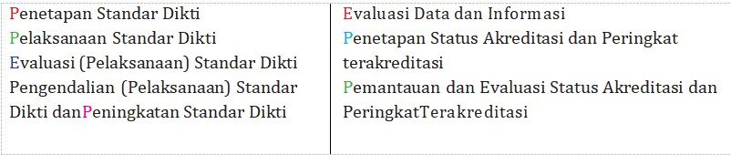
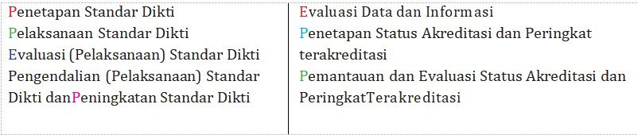
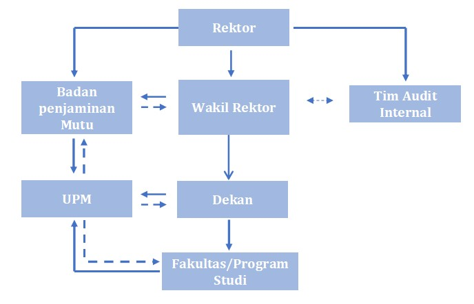

SISTEM PENJAMINAN MUTU INTERNAL (SPMI)
Penjaminan Mutu
a. Tingkat Universitas
Penjaminan mutu pada tingkat universitas dilaksanakan oleh Tim Auditor yang dibentuk oleh Badan Penjaminan Mutu Universitas. BPM Universitas Gresik dipimpin oleh ketua yang bertindak sebagai perwakilan pimpinan dalam penerapan SPMI di lingkungan UNIGRES. Tugas BPM dalam SPMI adalah:
1). Merencanakan, dan merancang model SPMI yang akan diterapkan di Universitas Gresik
2). Menyiapkan dan menyusun perangkat/dokumen mutu yang diperlukan dalam pelaksanaan penjaminan mutu.
3). Mengawal pelaksanaan SPMI pada setiap bagian dalam lingkungan Universitas Gresik.
4). Melakukan monitoring pelaksanaan sistem penjaminan mutu melalui pengukuran pencapaian sasaran mutu dan rencana mutu serta evaluasi diri tiap unit.
5). Melakukan pengukuran kepuasan stakeholders.
6). Melakukan audit mutu internal terhadap pelaksanaan SPMI oleh tiap unit.
7). Melaksanakan Rapat Tinjauan Manajemen sebagai forum evaluasi dan tindak lanjut hasil audit terhadap pelaksanaan sistem penjaminan mutu.
8). Melakukan pelatihan, workshop, konsultasi, kerjasama, studi banding bidang penjaminan mutu.
9). Menjalin kerjasama dengan berbagai pihak dalam bidang penjaminan mutu.
10). Melaporkan secara priodik kepada Rektor tentang hal-hal yang berkaitan dengan pelaksanaan sistem penjaminan mutu.
b. Tingkat Fakultas atau Program Studi
Penjaminan mutu akademik di tingkat fakultas dan prodi dilakukan oleh Dekan, kaprodi dan Unit Penjaminan Mutu (UPM) Fakultas. Dekan bertanggungjawab terhadap pelaksanaan penjaminan mutu di tingkat fakultas.
Tugas Unit Penjaminan Mutu
1). Menjabarkan Standar Mutu Universitas Gresik kedalam Standar Mutu Fakultas dan Prodi.
2). Menjabarkan Manual Mutu Universitas kedalam Manual Mutu Fakultas dan prodi.
3). Sosialisasi sistem penjaminan mutu kepada semua sivitas akademika di fakultas yang bersangkutan.
4). Membahas dan menindaklanjuti laporan Penjaminan Mutu Program Studi.
5). Mengkoordinasi penyusunan evaluasi diri program studi.
6). Mengkoordinasi perbaikan proses belajar mengajar.
7). Mengirim hasil evaluasi diri program studi ke BPM Universitas.
8). Dalam melaksanakan tugasnya UPM Fakultas melakukan konsultasi dan koordinasi dengan BPM Universitas.
9). Kesesuaian Pelaksanaan pembelajaran Spesifikasi Program Studi (SP); Kompetensi Lulusan (KL); Prosedur Mutu (PM) dan; Instruksi Kerja (IK)
10). Evaluasi pelaksanaan pembelajaran.
11). Evaluasi hasil pembelajaran.
12). Tindakan perbaikan proses pembelajaran.
13). Penyempurnaan Spesifikasi Program Studi (SP); Kompetensi Lulusan (KL); Prosedur Mutu (PM) dan; Instruksi Kerja (IK) secara berkelanjutan.
14). Melakukan evaluasi proses pembelajaran setiap semester.
15). Menyusun laporan hasil evaluasi proses pembelajaran.
16). Hasil evaluasi proses pembelajaran dilaporkan kepada dekan
Budaya Mutu yang merupakan ouput dari SPM Dikti merupakan Pola Pikir, Pola Sikap, dan Pola Perilaku berdasarkan Standar Dikti yang dilaksanakan oleh semua pemangku kepentingan (internal stakeholders) di perguruan tinggi.
Secara skematik mekanisme SPM Dikti dapat dilihat pada Gambar 1.1 di berikut ini.
 

Struktur Organisasi Sistem Penjaminan Mutu Internal Universitas Gresik
